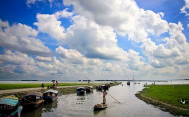

Rajshahi(রাজশাহী)
ঢাকা জেলার দর্শনীয় স্থান, ঐতিহাসিক স্থান ও স্থাপনা, পার্ক ও বিনোদন কেন্দ্র, পুরান ঢাকার ভ্রমণ স্থান,ইতিহাস ও ঐতিহ্যের বর্ণিল যোগাযোগের গাজীপুর জেলা প্রত্নসম্পদ ও দর্শনীয় স্থানে ভরপুর। রাজধানী ঢাকার দর্শনীয় স্থান ও প্রত্নসম্পদের মধ্যে উল্লেখযোগ্য হলোঃ ভাওয়াল রাজবাড়ী, বলধার জমিদার বাড়ী, প্রাচীন রাজধানী ইন্দ্রাকপুর, বলিয়াদী জমিদার বাড়ী, কাশিমপুর জমিদার বাড়ী, সেন্ট নিকোলাস চার্চ, ভাওয়াল জাতীয় উদ্যান, নুহাস পল্লী, বঙ্গবন্ধু সাফারি পার্ক, মন পুড়া পার্ক, বড় ভূঁইয়া বাড়ী ইত্যাদি।
পুঠিয়া রাজবাড়ী (রাজশাহী)
পুঠিয়া রাজবাড়ী (Puthia Rajbari) রাজশাহীতে অবস্থিত নজরকাড়া স্থাপত্যের একটি অনন্য নিদর্শন। রাজশাহী বিভাগীয় শহর হতে ৩০ কিলোমিটার এবং রাজশাহী-নাটোর মহসড়ক …
আলপনা গ্রাম টিকইল (চাঁপাইনবাবগঞ্জ)
চাঁপাইনবাবগঞ্জ জেলার নাচোল উপজেলার ছোট্ট একটা গ্রামের
নাম টিকইল ((Tikoil)। আর টিকইল গ্রামের প্রতিটি দেয়াল যেন উন্মুক্ত ক্যানভাস। সেই ক্যানভাসে …

চায়না বাঁধ (সিরাজগঞ্জ)
দুইপাশে নদী আর মাঝখানে সবুজ ঘাসের গালিচায় বসে অপূর্ব প্রকৃতিকে উপভোগ করতে চাইলে সিরাজগঞ্জ জেলায় অবস্থিত চায়না বাঁধ (China Dam) …
মহাস্থানগড় (বগুড়া)
মহাস্থানগড় (Mahasthangarh) বগুড়া জেলার শিবগঞ্জ উপজেলায় অবস্থিত। প্রাচীন পুন্ড্রনগরীতে প্রায় ৪০০০ বছর পুরাতন স্থাপনা রয়েছে। মাউর্যা এবং গুপ্ত রাজারা মহাস্থানগড়কে …
বিহার ধাপ (বগুড়া)
বিহার ধাপ (Bihar Dhap) বগুড়া জেলার শিবগঞ্জ উপজেলায় অবস্থিত প্রত্নতাত্ত্বিক একটি স্থান। নাগর নদীর পাশ ঘেঁষা এই স্থাপনাটি স্থানীয়দের কাছে …
মানকালীর কুণ্ড (বগুড়া)
বগুড়া জেলার শিবগঞ্জ উপজেলায় রয়েছে প্রাচীন সভ্যতার এক অন্যতম নিদর্শন মানকালীর কুণ্ড (Mankali’s Kund)। ষাটের দশকের শুরুর দিকে তৎকালীন পাকিস্থান …
ভীমের জাঙ্গাল (বগুড়া)
প্রাচীন বা মধ্যযুগের প্রথম দিকে উত্তর বাংলার বরেন্দ্র অঞ্চলে নির্মিত একটি সড়ক ও বাধ হল ভিমের জাঙ্গাল (Bhimer Jangal)। দেশের …
রবি ঠাকুরের কুঠিবাড়ী (নওগাঁ)
নওগাঁ জেলার আত্রাই উপজেলায় পতিসর গ্রামে নাগর নদীর তীরে অবস্থিত রবি ঠাকুরের কুঠিবাড়ী (Rabindra Kachari Bari) বাংলাদেশের একটি অন্যতম সংরক্ষিত

চলন বিল (নাটোর)
বাংলাদেশের সর্ববৃহৎ বিলের নাম চলন বিল (Chalan Beel)। নাটোর, সিরাজগঞ্জ এবং পাবনা জেলাজুড়ে ছড়িয়ে থাকা ছোট ছোট অনেকগুলো বিলের সমষ্টি …

লকমা রাজবাড়ি (জয়পুরহাট)
জয়পুরহাট জেলার পাঁচবিবি উপজেলার ভারত সীমান্তবর্তী পশ্চিম কড়িয়া গ্রামে অবস্থিত লকমা রাজবাড়ি (Lakma Palace / Lakma Rajbari) একটি ঐতিহাসিক প্রত্নতাত্ত্বিক …